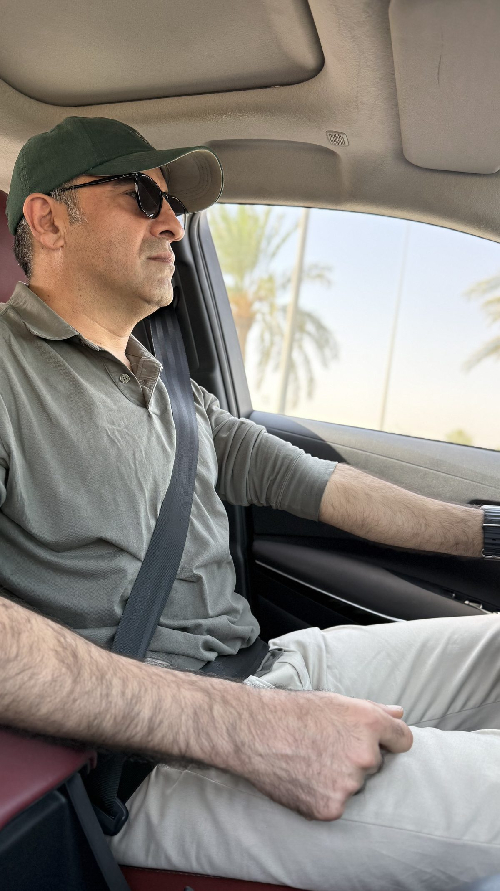

Expansion and a Shifting Landscape
The kitchen was now operating at full capacity, meeting a significant share of the market's demand while holding to the highest standards of quality and hygiene. Once its stability and success were assured, we decided to build a five-storey residential complex above the facility.
Meanwhile, the economic climate was shifting and opening new avenues for cooperation with foreign companies. For someone who already understood the business landscape, it was an ideal moment to widen my commercial reach. One of the firms entering Iraq's development projects at that time was Kayson. What began as a partnership focused on cement supply and customs affairs soon matured into a stable, long-term economic relationship.
In parallel, Iraq's broader situation was gradually improving. A turning point came when Abu Musab al-Zarqawi, the notoriously ruthless leader of Al-Qaeda in Iraq, was killed. Around the same time, through the efforts of Sheikh Sattar Abu Risha, the Awakening (Sahwa) movement took shape, drawing some ninety thousand former fighters into a newly organised structure. That transformation played a crucial part in restoring a measure of stability to the country.
Yet the stability proved fragile. A shortage of political wisdom among the country's leadership, together with the weight of external rivalries pressing on Iraq, set this movement on a difficult path. In the years that followed came the rise of ISIS — an outcome rooted in this very chain of events. In the coming chapters, I will turn to the fate of that armed movement and the process that led to the emergence of ISIS.